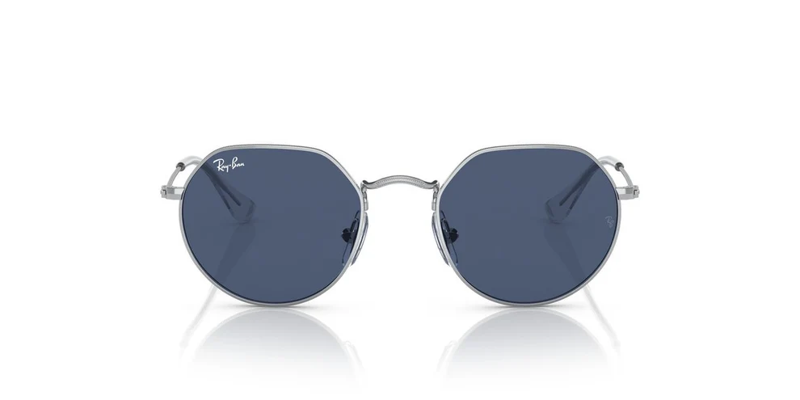

RAY-BAN

RAY-BAN
Jack Silver - RJ9555S
Compra tus lunas + monturas:
OBTÉN 50% 2DO PAR- Suscríbete y descarga tu cupón 15% DCTO adicional aquí.
- Satisfacción garantizada
Limpieza y ajuste gratis en todas nuestras tiendas. - Garantía óptica y garantía estética
Para ver nuestras garantías, haz click aquí - Retira en 24 horas en tienda*
Envío gratis a todo el Perú. Consulta los plazos aquí
PRECIO:
S/100
Hasta 12 cuotas sin interés - Valor cuota: S/ 8.33
Acerca de la montura
Detalles de la montura
︿Material:
Metal
Metal
Forma:
Hexagonal
Hexagonal
Color:
Plateado / Azul
Plateado / Azul
Género:
Niños
Niños
Medidas de la montura
︿Tamaño de las lunas:
46mm
46mm
Ancho del puente:
16mm
16mm
Largo de la varilla:
130mm
130mm
Acerca de RAY-BAN
︿
El estilo icónico de Ray-Ban adaptado para los más jóvenes. El modelo Jack Silver ofrece un diseño hexagonal moderno con estructura metálica ligera y resistente, ideal para acompañar el ritmo diario de los niños con total seguridad.